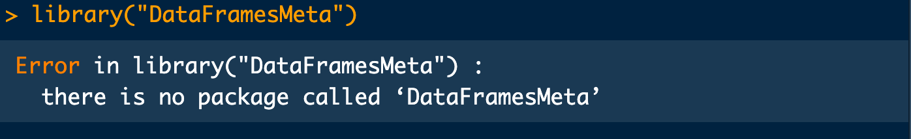

name = "James";
oranges = 3;
mangoes = 2;
"$name bought $oranges oranges and $mangoes mangoes""James bought 3 oranges and 2 mangoes"I’ve heard a lot of good things about the julia programming language over the last several years, but I’ve not bothered to learn it yet. Usually, my principle is that I only learn a new language or tool (or stack as the cool guys would call it) when I need it but not because everyone is raving about it.
The appealing features of julia that I hear a lot about are its computational speed (apparrently as fast as C/C++!), composability thorough multiple dispatch (wth is even that!!!), reproducibility features, and readability (easier syntax).
These are all attractive features that I want to harness moving forward, so a natural thing to do is to compare it to languages that I’m more familiar with.
In this post, I do a quick and dirty comparison of julia to R. This is not novel as others have written about it123, including the official comparison by the julia folks. However, this is my own way of learning as I go, so forgive me if none of this is new to you but I’d still love to hear your thoughts.
Is there anything non-factual or unfair about my comparisons? Do share your thoughts below or wherever I shared this post.
In julia, objects are auto-printed when created but you can suppress it by ending the line with ; like other programming languages. In R, objects have to be printed explicitly.
name = "James";
oranges = 3;
mangoes = 2;
"$name bought $oranges oranges and $mangoes mangoes""James bought 3 oranges and 2 mangoes"name <- "James" # Not printed
# You have to explicitly print the object by calling it or passing it to print
name[1] "James"print(name)[1] "James"I find julia’s feature a little annoying especially for data science projects.
In julia, you can insert/interpolate variables into a string using the $ sign. You can do the same in R either using inbuilt functions like paste(), paste0(), sprintf(), or with external packages such as the {glue} R package.
name = "James";
oranges = 3;
mangoes = 2;
"$name bought $oranges oranges and $mangoes mangoes""James bought 3 oranges and 2 mangoes"name <- "James"
oranges <- 3
mangoes <- 2
sprintf("%s bought %s oranges and %s mangoes", name, oranges, mangoes)[1] "James bought 3 oranges and 2 mangoes"paste(name, "bought", oranges, "oranges", "and", mangoes, "mangoes")[1] "James bought 3 oranges and 2 mangoes"Using paste() or paste0 can be a bit tedious but sprintf() is definitely a nice contender. Overall, julia is still easier to type.
for loopsSay I want to populate a matrix where each element is the sum of its row and column indices.
A = 3;
B = 3;
M = [i+j for i in 1:A, j in 1:B]3×3 Matrix{Int64}:
2 3 4
3 4 5
4 5 6A <- 3
B <- 3
M <- matrix(
0,
nrow = A,
ncol = B
)
for (i in 1:A) {
for (j in 1:B) {
M[i, j] <- i + j
}
}
print(M) [,1] [,2] [,3]
[1,] 2 3 4
[2,] 3 4 5
[3,] 4 5 6The array comprehension method in julia makes it incredibly easy to write complicated nested for loops, so julia wins here again.
Julia has inbuilt functionalities to create a project-specific Manifest.toml for pinning the packages and versions used. This great for reproducibility and portability purposes. You can also create a Project.toml file to store information about the project.
In your command line, type (sequentially)
]
activate <path-to-project> # take snapshot of a projectR has no inbuilt functionalities for this. You can, however, use packages such as {renv} to pin your package versions for reproducibility.
if (!require(renv)) install.packages("renv")
library(renv)
renv::activate()It’s quite clear that having to choose a package that works for you with minimal cognitive load is quite daunting for a new/intermediate user of R. Moreover, you also have to worry about the version of the package used for taking the snapshot itself. All these make it a little less desirable. Julia’s inbuilt features for snapshoting a project make it more desirable for conducting reproducible research.
R has the tidyverse and other communities who have spent dedicated time developing transformational packages. The community is relatively large with an uncountable number of packages for doing data statistics, data science, and even general purpose programming including web development.
Julia is a much younger language but that is not always a bad thing. Being a more recent language means the core developers have the opportunity to incorporate features from existing languages in order to give secondary developers and users a better experience.
When you try to load a package that’s not yet been installed, R’s error message could be more informative by informing you if the package exists but not installed.
“there is no package called …”. Is not really a useful error message especially for beginners.

Julia has a more informative package loading error because it checks the registry to see if the package exists and gives you a simple walkthrough to install it.